Building trust into a tutoring marketplace
Study Buddy is a marketplace where students find a tutor, book and pay for lessons in one place. Research showed that tutors leave existing platforms because of unfair fees and payment risks, not the interface. So we built fair rules into the product — and I designed the whole product for both sides, desktop and mobile, until it went into development.
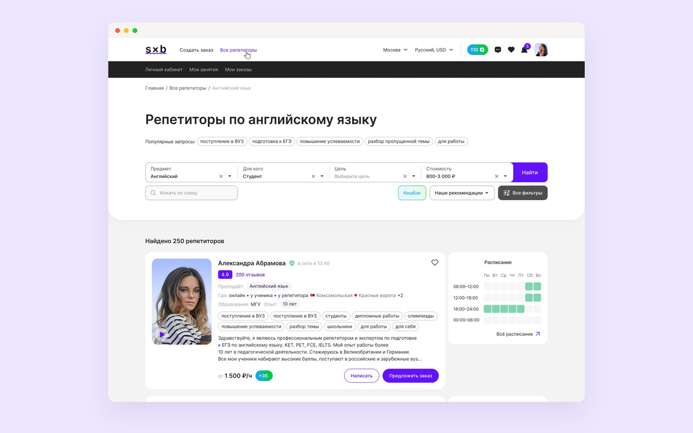
Summary
Objectives
- Make it easy for students to find and book a tutor they can trust.
- Make the platform fair enough that tutors want to stay.
- Remove payment risk for both sides.
Role
UI/UX designer, whole product
Research with the Design Lead, personas, flows, UI, states, mobile, handoff. The Design Lead reviewed my work.
Period & team
About one year, from early 2023
Me and a Design Lead; developers once the build started. Russian-speaking market.
Key skills
Three sides of one problem
- 01Students can't trust the choiceFinding a tutor depends on personal recommendations, prices vary wildly, and there are no ratings they can trust.
- 02Tutors pay and risk too muchPaid responses, large upfront fees for every new student, rating penalties for declining a request, and the risk of not being paid.
- 03The business needs tutors firstWithout tutors there is nothing for students to choose from, so the platform has to win tutors over.
What research changed
Together with the Design Lead, I ran two Google Forms surveys with branching logic (13–26 questions) — 68 students and parents, 15 tutors — and two in-depth interviews with experienced tutors, 50 and 60 minutes each, which we turned into two personas. We also collected 15+ competitors and reviewed 8 direct tutoring platforms screen by screen.
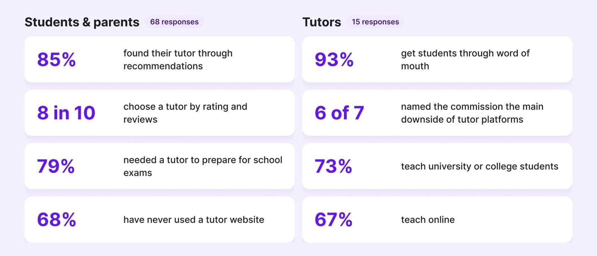
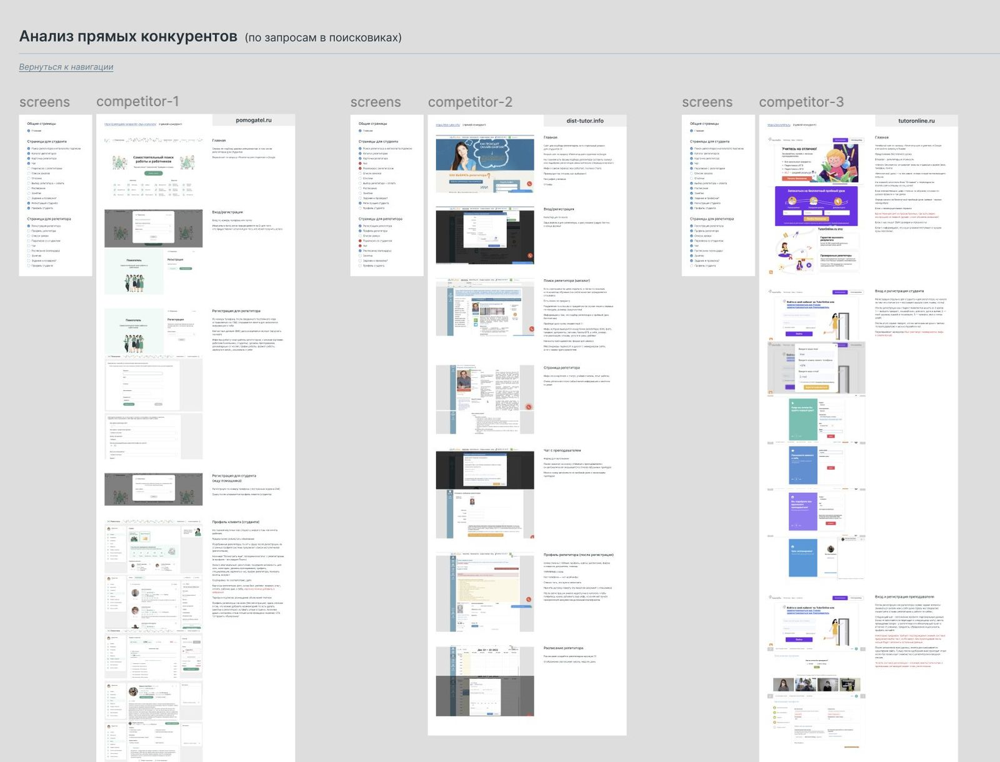
We expected tutors to complain about inconvenient interfaces. Instead, almost every pain point was about money, trust and risk:
6 of 7 tutors who had used platforms named the commission as the main downside. One paid about 6,000 ₽ upfront for a student whose lesson cost 1,700 ₽ — and lost it when the student stopped after two lessons.
93% of tutors get students through recommendations, and 85% of students found their tutor the same way. Tutors leave platforms once they have enough students.
8 in 10 choose a tutor by rating and reviews, and half by specialisation — exam prep, olympiads, help with a topic.
Tutors worry about unpaid lessons and feel uncomfortable reminding parents about money.
A cancelled lesson costs money, and on other platforms declining a request lowers the rating.
Limits. Professional tutor chats refused to post the survey because the project was commercial, so the tutor sample stayed small (15), and students were surveyed but not interviewed.
Fair rules as product decisions
Commission per lesson, not paid responses
Tutors pay only for completed lessons, and the commission goes down as they grow — to 12% at the top level. A profile from another site unlocks the top level for the first month.
Payment through the platform
Paying directly is simpler, but it's what tutors fear. The money is reserved before the lesson and goes to the tutor after it, so nobody has to remind anyone.
A light “Offers” tab
Students can offer an order to tutors from the catalog and see each status — but can cancel any time and are never blocked from choosing a tutor who already responded.
Several lesson formats per request
67% of surveyed tutors teach online, so a request can include several formats, with the number of available tutors next to each option.
Left out of the first version: built-in video calls (lessons ran through third-party services via a link) and complex payouts for companies — 93% of surveyed tutors work informally.
Choosing a tutor by trust
The catalog puts what students choose by up front: rating and number of reviews, subjects, formats and location, education and experience, specialisation tags and a weekly availability grid — with price and two clear actions, Message or Offer an order.
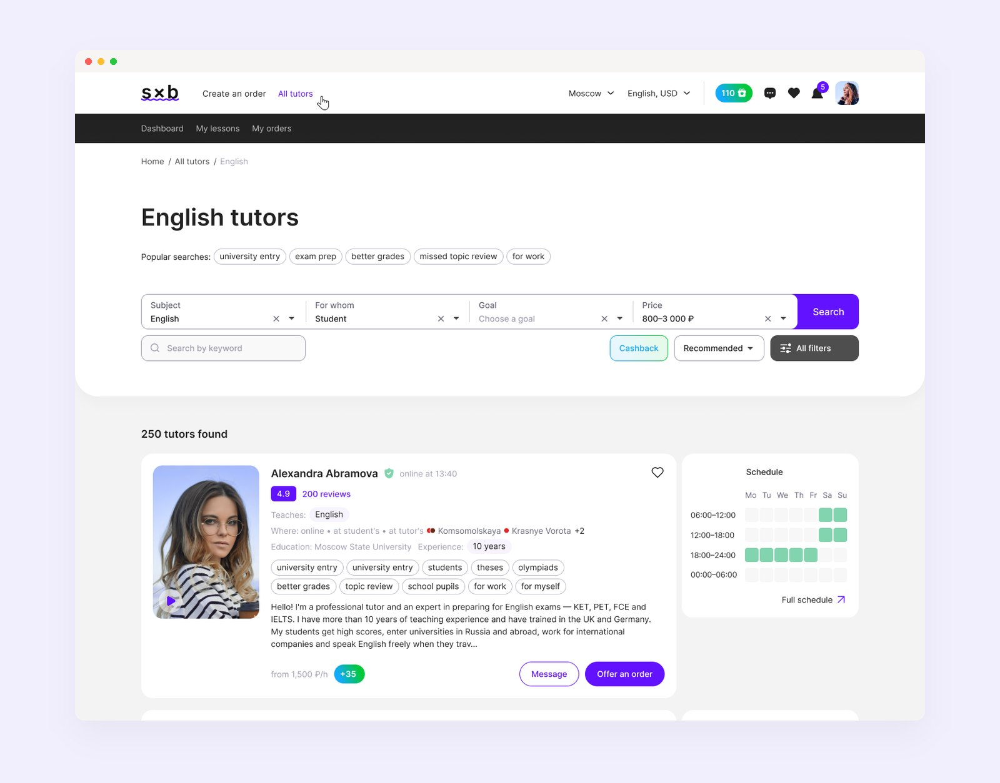
The tutor page adds a video introduction, the full description, schedule, reviews, résumé and subjects, with the price and actions fixed on the right.
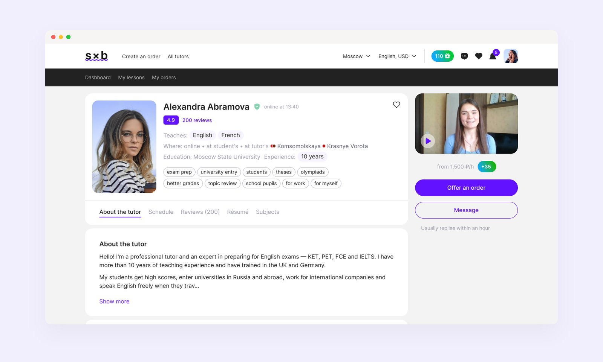
Language. The product was built in Russian. I translated these two screens into English for this portfolio; the other screens show the original interface.
A request, one question at a time
Instead of a long form, the request asks one question per step, with earlier answers visible on the left. The number of matching tutors updates with every answer, each option shows how many tutors fit, and hints appear at the right moment. Experience and price are chosen together, so expectations are set before tutors respond.
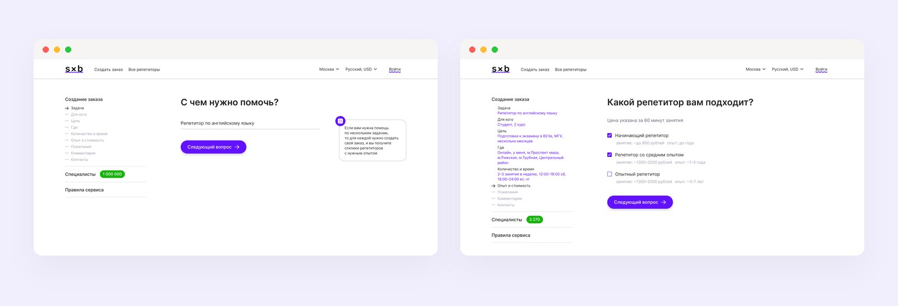
Responses, offers and price in one place
The order page has three tabs — responses, offers sent from the catalog and a catalog of tutors who fit the order — and the student controls whether it is open for new responses. In the chat, a tutor names a price and the student can choose them in one tap.
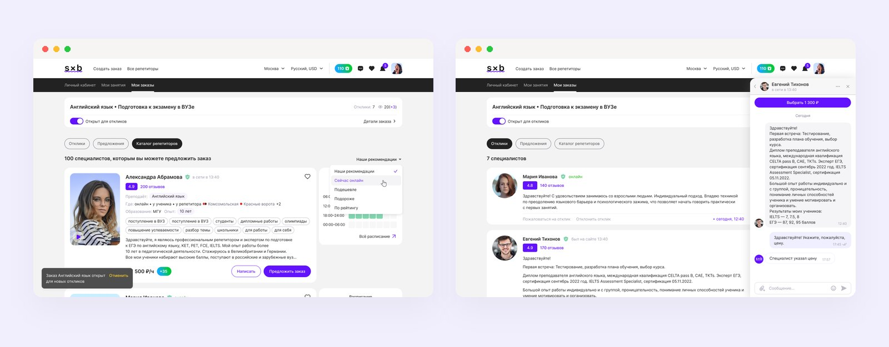
Payment that protects both sides
The payment screen states the guarantees in plain words: the money is reserved, the tutor gets it only after the lesson, and it is returned if the lesson doesn't happen. Paying by QR code (SBP) gives a 3% discount.
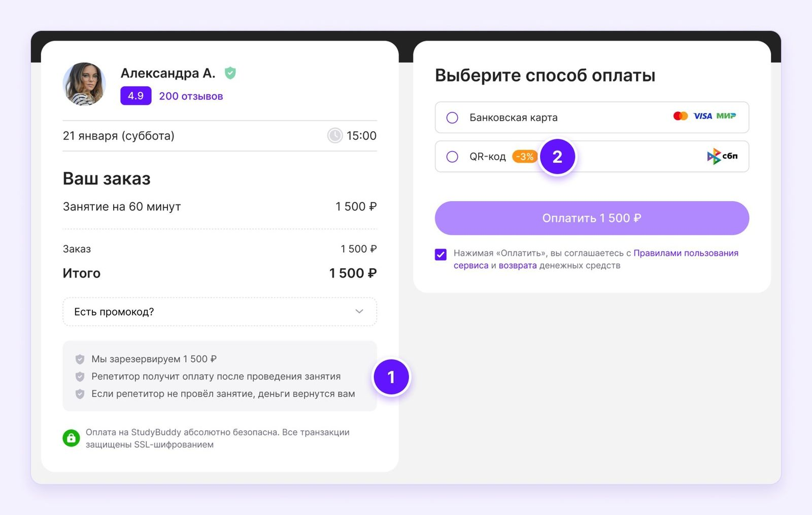
Lessons and honest reviews
“My lessons” highlights today's lesson with a Start button and lists upcoming and past lessons. After the lesson, the recording is saved and the student is asked to rate it and leave a review — so reviews come only from students who actually had a lesson.
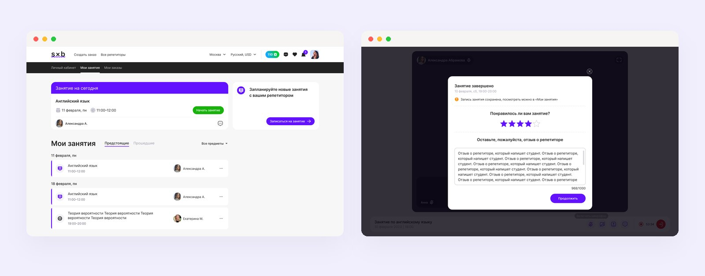
For tutors: fair earnings, visible upfront
Tutors fill in a long profile, so I split it into 10 one-question steps with a side stepper. Goals per subject become tags on the tutor card, the home address stays private and is used only to find nearby orders, and every goal gets its own price.
The earnings step shows the level system: every completed lesson earns points, and the higher the level, the lower the commission — down to 12%. A link to a profile on another site unlocks the top level for a month.
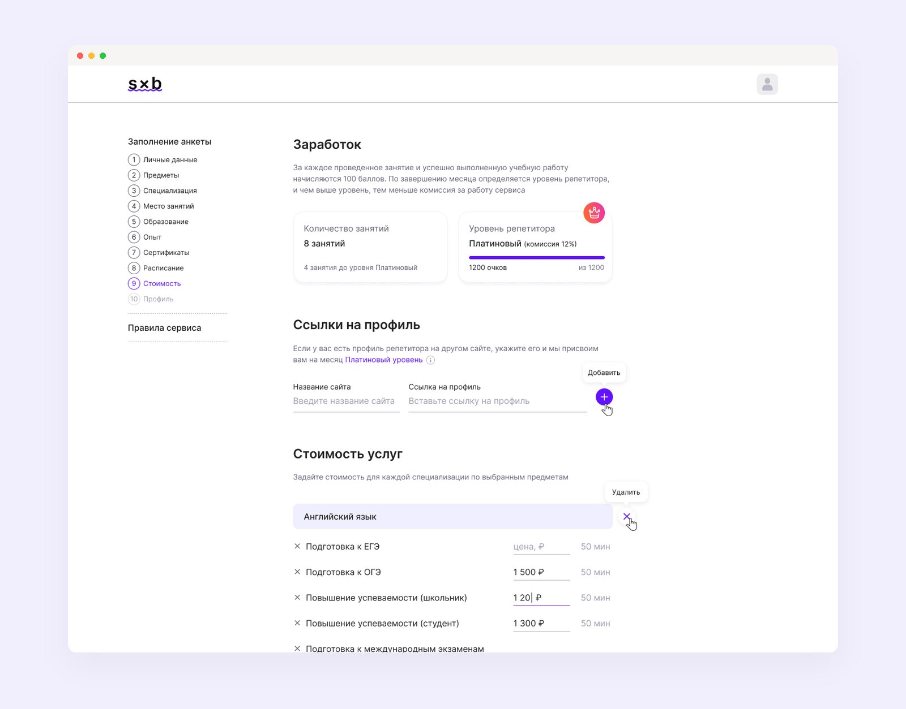
Finding orders was the most common difficulty for tutors (53%). Order search is pre-filled from the profile, new orders arrive live, and titles come from the student's answer to “What do you need help with?”. Personal offers from students have their own tab, with Respond and Decline.
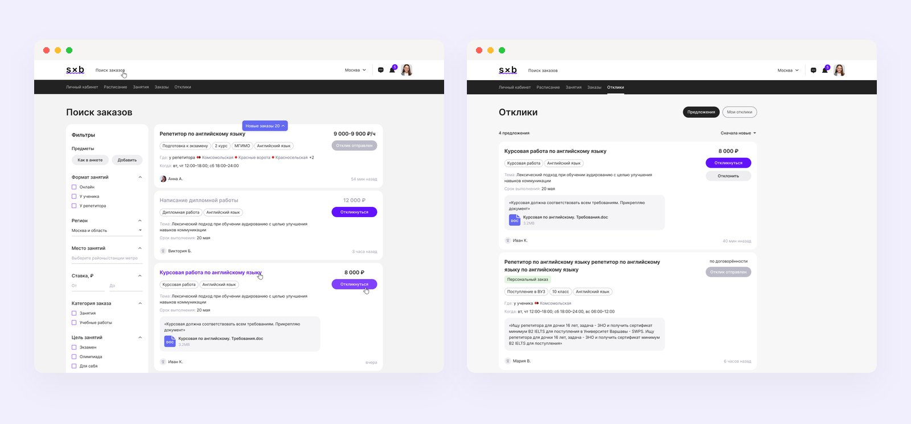
Mobile, states and handoff
Key tutor flows were also designed for 360 px. Every scenario came with its states — skeleton loading, empty states that say what to do next, and inline validation — and a navigation page listed all 17 tutor scenarios with a status for each, which kept a year-long project clear for the Design Lead, the business and later the developers.
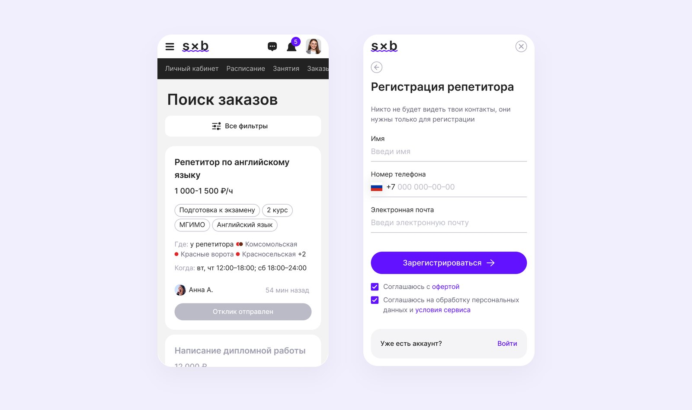
A simplification that confused people
Before: every line of the tutor card had a long label, and the location line listed every format and metro station — heavy to scan in a long catalog. Tried: removing the labels. But for online-only tutors the line now said just “Online” — easy to read as “online right now”, next to the status by the name. Final: short labels came back (“Where: Online +2”), and the “About the tutor” heading went, so the tutor's own words start right away.
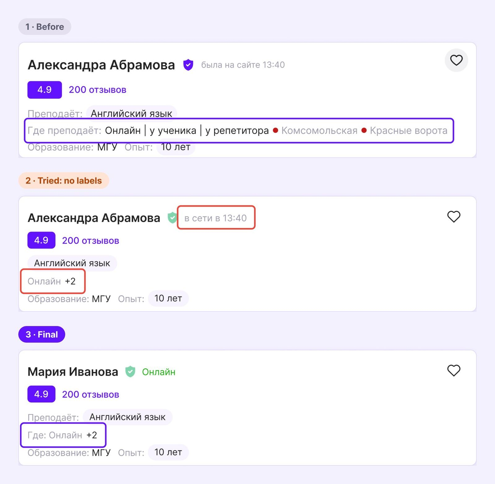
Lesson. Removing labels makes a card look cleaner, but short labels are often what keeps it understandable.
What I learned
Numbers plus stories
Surveys showed what was happening, interviews explained why — together they showed the real problem was the business model, not the interface.
Plan recruitment early
Reaching tutors was hard. Next time I would plan recruitment earlier and test onboarding with real tutors before handoff.
Document for the team
A year with a Design Lead taught me to document decisions, prepare flows for review and keep a large file clear.
Status. The product went into development and I supported the team with design changes during that stage. I left before the public launch, so I don't have usage metrics.